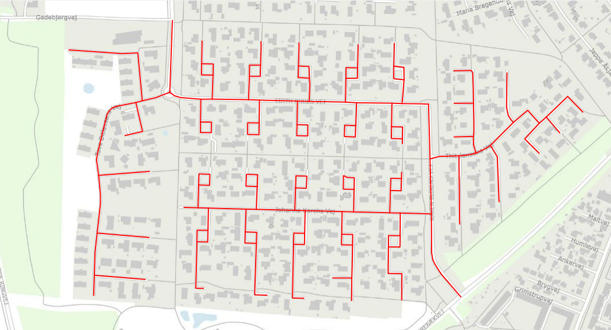
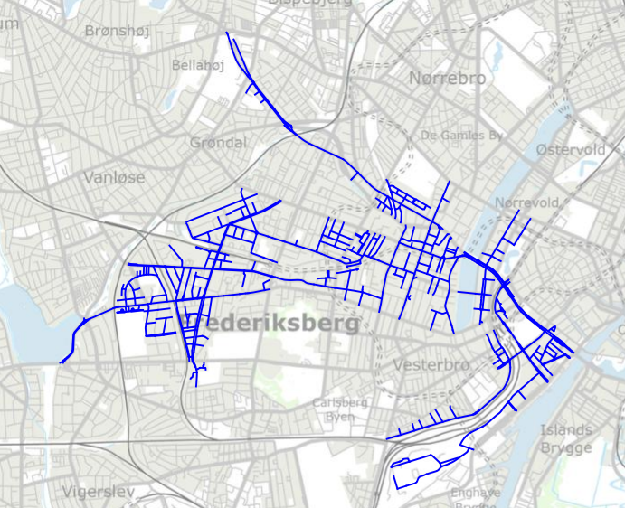
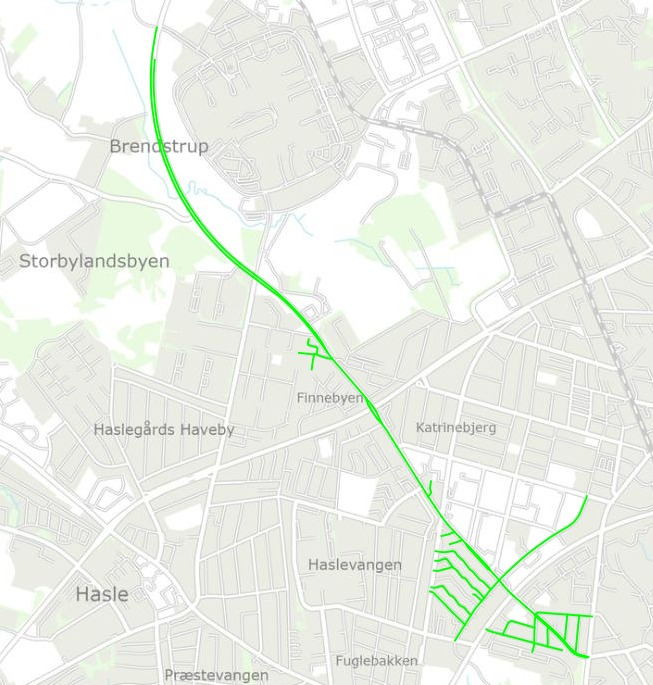

Grupper af vejnavne
fundet ved brug af OpenStreetMap og Wikidata
Peter Brodersen, Septima
September 2024
Netværk af veje
Opkaldt efter
- Kvinder
- Mænd
- Digtere
- Mandlige politikere og slagtere født i Aarhus før 1864, hvor mindst én af forældrene er maler
Kvinder

Mænd

Digtere

Resultater
Resultater
Største træ
- Kvinder: Næstved, 7 km samlet
- Mænd: København, 79 km samlet
- Digtere: Aarhus, 20 km samlet
Resultater
Total vejlængde i Danmark
- Kvinder: 325 km
- Mænd: 1.935 km
- Hankønsdyr: 5 km
- Hankønsdyr? Bambi, Fenrisulven, Grane og Pegasus
- Wikidata skelner imellem mænd, kvinder, hankøn og hunkøn
Kode
Kode
Kun to Postgres-tabeller
- OpenStreetMap
- Geometri
- Reference til Wikidata
- Wikidata
- JSON!
Kode
WITH trees AS (
SELECT unnest(ST_ClusterIntersecting(geom)) AS tree
FROM osmetymology.osm_ways ow
INNER JOIN osmetymology.wikidata w ON ow."name:etymology:wikidata" = w.itemid
-- WHERE w.claims->'P21'->0->'mainsnak'->'datavalue'->'value'->>'id' = 'Q6581072' -- Kvinder
-- WHERE w.claims->'P21'->0->'mainsnak'->'datavalue'->'value'->>'id' = 'Q6581097' -- Mænd
WHERE w.claims @@ '$.P106[*].mainsnak.datavalue.value.id == "Q49757"' -- Digtere
)
SELECT
ST_NPoints(tree) AS points,
ST_NumGeometries(tree) AS geometries,
ST_Length(tree) AS length,
ST_CollectionExtract(tree) AS geom,
ROW_NUMBER () OVER (ORDER BY tree)
FROM trees
ORDER BY points DESC
LIMIT 1
Inspiration
Inspiration
- Længste shortest path
- Opsummering på andet end samlet længde
- … og så kan det bruges til politisk debat!
Hvad har vi lært?
Hvad har vi lært?
ST_ClusterIntersecting()i PostGISjsonb-funktioner i PostgreSQL- Det viser sig til ingens overraskelse, at også Danmark har en historik med
kønsulighed
- Men det bliver mere håndgribeligt, når vi kan visualisere det!
Datagrundlag
(stop eventuelt her!)
Datagrundlag
OpenStreetMap
- Vejgeometri
- Navn
- Etymologi
- Fritekst
- Wikipedia-artikel
- Wikidata-emne
Angivet for knap 30.000 veje i Danmark!
Datagrundlag
OpenStreetMap

Datagrundlag
OpenStreetMap
| Key | Value |
|---|---|
| name | Helle Gotveds Plads |
| name:etymology:wikidata | Q12316068 |
| place | square |
| wikidata | Q116860286 |
Datagrundlag
Wikidata
Wikidata er emner med data som key⇒value
Helle Gotved (Q12316068):
| tilfælde af P31 | menneske Q5 |
| køn P21 | kvinde Q6581072 |
| beskæftigelse P106 | gymnastiklærer Q2312637 |
| beskæftigelse P106 | forfatter Q36180 |
| beskæftigelse P106 | gymnast Q16947675 |
| … | … |
Datagrundlag
PostgreSQL og PostGIS
- Import via osmetymology
osm2pgsql- Gruppering på navne, emner og kommuner
- Wikidata-emner